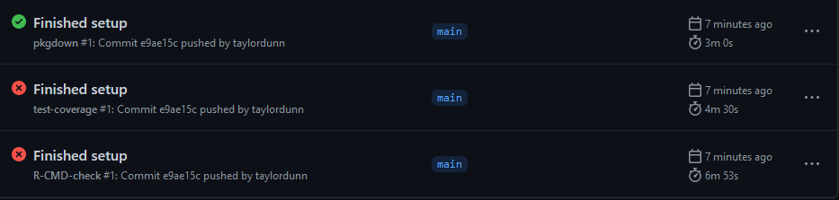
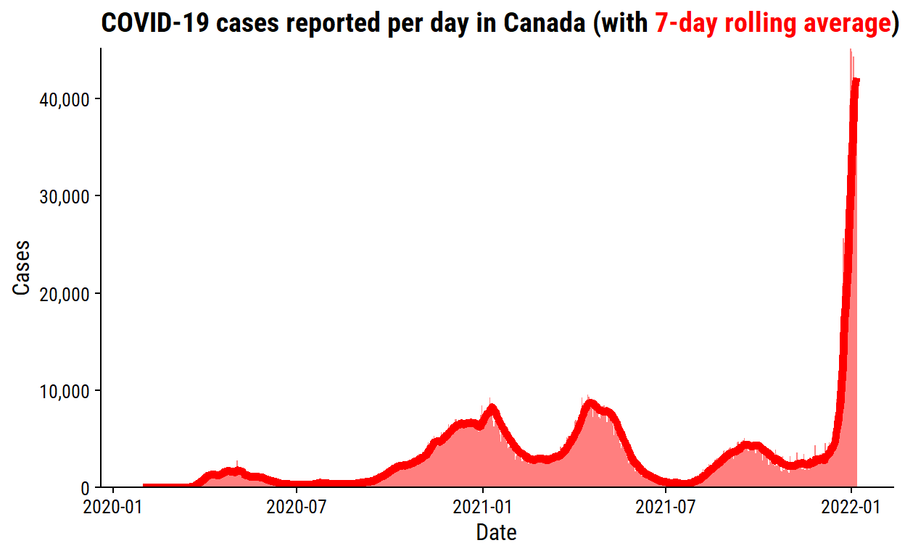
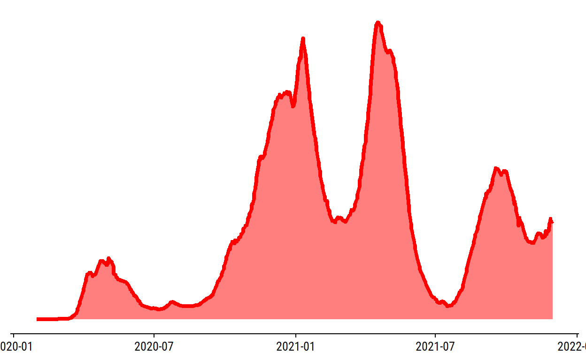
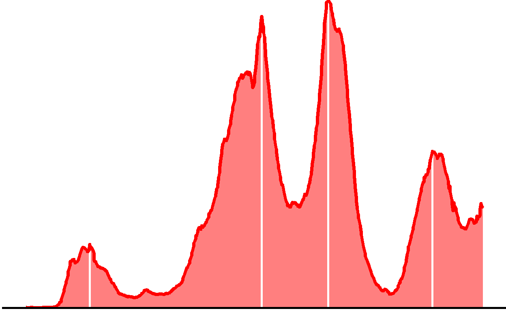

Setup
knitr::opts_chunk$set(echo = TRUE)
library(tidyverse)
library(ggtext)
library(dunnr)
extrafont::loadfonts(device = "win", quiet = TRUE)
theme_set(theme_td())
set_geom_fonts()
set_palette()
TL;DR
To see the finished product, check out the package website and the source code.
Introduction
In my previous post, I explored the Canadian COVID-19 tracker API and decided to make an API wrapper package to facilitate using it in R.
Naming
The first, and some would say the hardest step for writing a package (or any piece of code for that matter) is naming it. I considered a lot of options, and in the end decided on the admittedly boring canadacovid, which I verified was available:
available::available("canadacovid", browse = FALSE)
── canadacovid ───────────────────────────────────────────────────────
Name valid: ✔
Available on CRAN: ✔
Available on Bioconductor: ✔
Available on GitHub: ✖
Abbreviations: http://www.abbreviations.com/canadacovid
Wikipedia: https://en.wikipedia.org/wiki/canadacovid
Wiktionary: https://en.wiktionary.org/wiki/canadacovid
Urban Dictionary:
Not found.
Sentiment:???General steps
With the usethis and devtools packages, getting an R package started with best practices is very easy.
First, I create the package, set it up on GitHub, and write some minor documentation:
usethis::create_tidy_package("canadacovid"): creates the RStudio project and opens it.- Connect GitHub.
usethis::use_git()creates the local repo.usethis::use_github()creates the repo on GitHub and makes an initial commit and push.usethis::use_tidy_github()adds some files to followtidyversepackage conventions, e.g. a templatecontributing.md.usethis::use_github_actions()configures a basicR CMD checkworkflow on GitHub Actions. 1usethis::use_tidy_github_actions()sets up additional workflows for GitHub Actions.
- As a
tidyverseenthusiast, I always setup my packages to usemagittr’s pipe operator%>%withusethis::use_pipe. usethis::use_testthat()sets up thetestthatpackage and directory structure.- This step actually isn’t necessary, as it was already done by
create_tidy_package.
- This step actually isn’t necessary, as it was already done by
- Update the
DESCRIPTIONfile, particularly theTitle,DescriptionandAuthorsfields. - Run
devtools::document()which will update theNAMESPACEfile with themagittrpipe.
Immediately after pushing these setup steps to GitHub, GitHub Actions got to work but failed on two of three workflows:

Both the R CMD and the test coverage workflows failed because I haven’t written any tests yet (or functions to be tested for that matter). Which brings me to the main package development process:
usethis::use_r("file-name")creates theR/file-name.Rfile.- Add one or more R functions to
file-name.R. usethis::use_package("dependency")to declare any package dependencies, updating theDESCRIPTIONfile.- Document the function(s):
- In RStudio, select
Code -> Insert Roxygen Skeleton(or Ctrl+Alt+Shift+R on Windows). - Run
devtools::document()to generate the.Rdfile and updateNAMESPACE. - Optional: check the documentation with
?func-name. - Optional: if using examples, check them with
devtools::check_examples().
- In RStudio, select
- Try it out.
devtools::load_all()to load all package functions (Ctrl+Shift+L on Windows).devtools::check()runsR CMD checkon the package.
- Write tests with
testthat.use_test("file-name")creates thetests/testthat/test-file-name.Rfile, paired toR/file-name.Rfile.devtools::test()orusethis::test_package()runs all tests.devtools::test_active_file()tests just the active file.
- Optional: update the
README.Rmdwith new functionality.devtools::build_readme()to knit.
- Optional: write or update a vignette to incorporate new functionality.
usethis::use_vignette("vignette-name")to initialize the vignette file.devtools::build_vignettes()to knit the vignettes.
Summary
The first function I will add retrieves the latest summary data from the API. I’ll call this file summary.R, and create it (and it’s associated test file) with:
And here is the get_summary function added to R/summary.R:
get_summary <- function(split = c("overall", "province", "region")) {
split <- match.arg(split)
base_url <- "https://api.covid19tracker.ca/summary"
split_path <- switch(split,
overall = "", province = "/split", region = "/split/hr")
url <- paste0(base_url, split_path)
resp <- httr::GET(url)
if (httr::http_error(resp)) {
stop(paste("API requested failed with code", httr::status_code(resp)),
call. = FALSE)
}
if (httr::http_type(resp) != "application/json") {
stop("API did not return JSON", call. = FALSE)
}
content_parsed <-
jsonlite::fromJSON(httr::content(resp, "text", encoding = "UTF-8"),
simplifyVector = FALSE)
dplyr::bind_rows(content_parsed$data) %>%
dplyr::bind_cols(content_parsed["last_updated"]) %>%
dplyr::mutate(
dplyr::across(tidyselect::matches("^change|total"), as.integer),
dplyr::across(tidyselect::matches("date"), as.Date),
last_updated = as.POSIXct(.data$last_updated)
)
}
Some notes:
- See my previous post for a more thorough explanation of how this code is interacting with the API and processing the data.
- For all of the imported functions, it is good practice to explicitly state the package, e.g.
httr::GET.- The exception is the very last line where I use
rlangto refer to the variable.data$last_updated. I find it clunky to include package names within pipe operations like that.
- The exception is the very last line where I use
match.argis a helpful base R function which matches thesplitparameter to just one of the given values. It returns an error if an unexpected value is provided.- I followed the advice from this
httrvignette and turned API errors into R errors.- The
httr::http_errorconditional returns an error message if the GET request failed, with the resulting HTTP status code. - The
httr::http_typeconditional returns an error message if the content is not in JSON format as expected.
- The
- Instead of using the
as = "parsed"argument tohttr::content, I parse the raw text directly usingjsonlite::fromJSON.- See this warning from the
httrdocumentation for the reason.
- See this warning from the
Add the dependencies:
usethis::use_package("httr", type = "Imports")
usethis::use_package("jsonlite", type = "Imports")
usethis::use_package("dplyr", type = "Imports")
usethis::use_package("tidyselect", type = "Imports")
usethis::use_package("rlang", type = "Imports")
I’ve explicitly set the type to “Imports” (which wasn’t necessary as this is the default) to make the point that it is recommended over “Depends”:
Unless there is a good reason otherwise, you should always list packages in Imports not Depends. That’s because a good package is self-contained, and minimises changes to the global environment (including the search path).
Next, some Roxygen documentation:
#' Get the most recent summary data
#'
#' Runs a GET request of summary data from the COVID-19 tracker API, and
#' returns parsed data.
#' Via the `split` argument, data my be "overall" (all provinces/territories
#' combined), by "province" (one row per province/territory) or by "region"
#' (one row per health region).
#'
#' @param split One of "overall", "province", or "region" to specify how the
#' data is split.
#'
#' @return A data frame containing the summary data.
#' @export
#'
#' @examples
#'
#' get_summary()
#' get_summary("province")
#' get_summary("region")
#'
#' @importFrom httr GET http_error http_type content
#' @importFrom jsonlite fromJSON
#' @importFrom dplyr bind_rows bind_cols mutate across
#' @importFrom tidyselect matches
#' @importFrom rlang .data
get_summary <- function(split = c("overall", "province", "region")) {
...Now I’ll edit the test-summary.R file with some simple tests (and run it here as an example):
library(testthat)
test_that("get_summary works", {
expect_error(get_summary(split = "provice"), "arg")
summary_overall <- get_summary()
expect_equal(nrow(summary_overall), 1)
expect_equal(ncol(summary_overall), 22)
expect_false(any(is.na(summary_overall)))
summary_province <- get_summary(split = "province")
expect_equal(nrow(summary_province), 13)
expect_equal(ncol(summary_province), 23)
expect_false(any(is.na(summary_province)))
expect_setequal(summary_province$province,
c("ON", "QC", "NS", "NB", "MB", "BC", "PE", "SK", "AB",
"NL", "NT", "YT", "NU"))
summary_region <- get_summary(split = "region")
expect_equal(nrow(summary_region), 92)
})
Test passed Everything passed successfully. Here is what was tested, from top to bottom:
- An error was returned for a misspelled
splitargument. summary_overallhas the expected number of rows, columns and no values areNA.summary_provincehas the expected number of rows, columns and no values areNA. Also the expected 13 provinces/territories are returned.summary_regionhas the expected number of rows. The number of columns will vary, because columns with all missing (NULL) values will be dropped.
Now with a documented and tested function, I do the following:
devtools::check()to run aR CMD check(also runs thetestthattests), which passes.- Update the
README.Rmdwith installation instructions, and an example of usingget_summary(). Then build withdevtools::build_readme().
I pushed this first iteration of the package to GitHub and, after about 10 minutes, all of the GitHub Actions workflows were successful:

Detour: refactoring code (already)
Before continuing with other functions, it occurred to me that I would end up re-writing this particular block of code multiple times:
resp <- httr::GET(url)
if (httr::http_error(resp)) {
stop(paste("API requested failed with code", httr::status_code(resp)),
call. = FALSE)
}
if (httr::http_type(resp) != "application/json") {
stop("API did not return JSON", call. = FALSE)
}
content_parsed <-
jsonlite::fromJSON(httr::content(resp, "text", encoding = "UTF-8"),
simplifyVector = FALSE)
A quote from R for Data Science:
You should consider writing a function whenever you’ve copied and pasted a block of code more than twice (i.e. you now have three copies of the same code).
So instead of copying and pasting this code block, I made a new function in a new file, api.R:
#' Get content and parse it
#'
#' Sends a GET request to https://api.covid19tracker.ca/.
#' If the request is successful and the returned content is JSON, formats it and
#' returns it parsed (via `jsonlite::fromJSON`).
#'
#' @param url A string URL linking to the API. If it does not contain the base
#' "https://api.covid19tracker.ca", then `url` will be combined with the base
#' to attempt to make a valid URL (and return a warning).
#'
#' @return A list.
#' @export
#'
#' @examples
#'
#' get_content_parsed("https://api.covid19tracker.ca/provinces")
#'
#' @importFrom httr GET http_error http_type content
#' @importFrom jsonlite fromJSON
#' @importFrom stringr str_detect
get_content_parsed <- function(url) {
base_url <- "https://api.covid19tracker.ca"
if (!stringr::str_detect(url, base_url)) {
url <- paste0(base_url, "/", url)
warning(
paste0("Provided URL did not include base (", base_url, ").\n",
"Combined URL with base for GET request: ", url)
)
}
resp <- httr::GET(url)
if (httr::http_error(resp)) {
stop(paste("API requested failed with code", httr::status_code(resp)),
call. = FALSE)
}
if (httr::http_type(resp) != "application/json") {
stop("API did not return JSON", call. = FALSE)
}
jsonlite::fromJSON(httr::content(resp, "text", encoding = "UTF-8"),
simplifyVector = FALSE)
}
This function expects a full url, but will add “https://api.covid19tracker.ca” if it is missing (and return a warning to say so). Some simple tests for get_content_parsed:
test_that("get_content_parsed works", {
expect_warning(get_content_parsed("provinces"), "base")
expect_error(
get_content_parsed("https://api.covid19tracker.ca/provices"), "API"
)
provinces <- get_content_parsed("https://api.covid19tracker.ca/provinces")
expect_true(is.list(provinces))
expect_equal(lengths(provinces), rep(12, 16))
})
Test passed Everything checks out, so I replace some of the code in get_summary with a call to get_content_parsed.
I don’t need to re-write tests for get_summary because it is functionally the same, but I do re-run those tests to make sure I didn’t break it with these changes (this is the whole point of unit testing). I then run devtools::check() and push changes to GitHub.
Reports
Writing the function to get reports follows the same procedure:
The reports are a bit more complicated because the queries can accept a few different parameters. Here is my first draft of get_reports, along with Roxygen documentation:
#' Get the day-to-day reports
#'
#' Runs a GET request of reports data from the COVID-19 tracker API, and
#' returns parsed data.
#' Via the `split` argument, data may be "overall" (all provinces/territories
#' combined), or by "province".
#' Alternatively, provide one or more two-letter codes (e.g. "AB") to `province`
#' to return reports for specific provinces, or one or more numeric `region`
#' codes (e.g. "1204") to return specific health regions.
#'
#' @param split One of "overall", or "province" to specify how the
#' data is split. An "overall" report gives cumulative numbers across Canada.
#' Splitting by "province" returns all reports for all provinces/territories.
#' @param province One or more province/territory codes ("AB", "BC", "MB", "NB",
#' "NL", "NS", "NT", "NU", "ON", "PE", "QC", "SK", "YT") to get reports.
#' Upper, lower and mixed case strings are accepted.
#' @param region One or more health region IDs to get reports. Numeric and
#' character values are accepted.
#' @param fill_dates When TRUE, the response fills in any missing dates with
#' blank entries.
#' @param stat Returns only the specified statistics, e.g. "cases".
#' @param date Returns reports from only the specified date.
#' @param after Returns reports from only on or after the specified date.
#' @param before Returns reports from only on or before the specified date.
#'
#' @return A data frame containing the reports data, one row per day. Includes
#' a `province` variable if data is split by province, and a `hr_uid` variable
#' if data is split by health region.
#' @export
#'
#' @examples
#'
#' get_reports()
#' get_reports("province")
#' get_reports(province = c("AB", "SK"))
#' get_reports(region = 1204)
#' get_reports(region = c("472", 1204), stat = "cases")
#' @importFrom dplyr bind_rows bind_cols mutate across
#' @importFrom tidyselect matches
#' @importFrom rlang .data
#' @importFrom purrr imap_chr map_dfr
#' @importFrom tibble lst
get_reports <- function(split = c("overall", "province"),
province = NULL, region = NULL,
fill_dates = NULL, stat = NULL, date = NULL,
after = NULL, before = NULL) {
base_url <- "https://api.covid19tracker.ca/reports/"
province_codes <- c(
"AB", "BC", "MB", "NB", "NL", "NS", "NT", "NU", "ON",
"PE", "QC", "SK", "YT"
)
split <- match.arg(split)
if (split == "province") province <- province_codes
parameters <- tibble::lst(fill_dates, stat, date, after, before)
# Remove NULL parameters
parameters <- parameters[lengths(parameters) == 1]
if (length(parameters) > 0) {
params_url <- purrr::imap_chr(parameters, ~ paste0(.y, "=", tolower(.x))) %>%
paste(collapse = "&")
params_url <- paste0("?", params_url)
} else {
params_url <- ""
}
if (!is.null(province)) {
province <- match.arg(toupper(province), province_codes, several.ok = TRUE)
reports <- purrr::map_dfr(
province,
function(province) {
url <- paste0(base_url, "province/", province, params_url)
content_parsed <- get_content_parsed(url)
dplyr::bind_cols(
content_parsed[c("province", "last_updated")],
dplyr::bind_rows(content_parsed$data)
)
}
)
} else if (!is.null(region)) {
reports <- purrr::map_dfr(
region,
function(region) {
url <- paste0(base_url, "regions/", region, params_url)
content_parsed <- get_content_parsed(url)
dplyr::bind_cols(
content_parsed[c("hr_uid", "last_updated")],
dplyr::bind_rows(content_parsed$data)
)
}
)
} else {
content_parsed <- get_content_parsed(paste0(base_url, params_url))
reports <- dplyr::bind_cols(
content_parsed["last_updated"],
dplyr::bind_rows(content_parsed$data)
)
}
reports %>%
dplyr::mutate(
dplyr::across(tidyselect::matches("^change|total"), as.integer),
dplyr::across(tidyselect::matches("date"), as.Date),
last_updated = as.POSIXct(.data$last_updated)
)
}
The get_content_parsed function paid off already – I used it three times above, saving ~20 lines of code each time.
Note that I didn’t allow split = "region" as an option because, if the function queries all regions, 92 separate GET requests are sent to the API in a short period. This eventually fails with HTTP code 429, indicating too many requests. This is called “rate limiting”, and the error code is a polite way of asking someone to stop spamming requests. I might alter this function in the future to send these requests slower, either with a call to Sys.sleep() or with the polite package.
get_reports is a more complex function than get_summary, and so I wrote more tests to try to capture that complexity:
test_that("get_reports works", {
reports_overall <- get_reports()
expect_equal(ncol(reports_overall), 22)
expect_equal(
reports_overall$date,
seq.Date(min(reports_overall$date), max(reports_overall$date), by = "day")
)
expect_false(any(is.na(reports_overall)))
reports_province <- get_reports(split = "province")
expect_equal(dplyr::n_distinct(reports_province$province), 13)
expect_equal(min(reports_province$date), min(reports_overall$date))
expect_equal(max(reports_province$date), max(reports_overall$date))
reports_ns_nb_nv <- get_reports(province = c("NS", "nb", "nU", "test"))
expect_equal(
unique(reports_ns_nb_nv$province), c("NS", "NB", "NU")
)
expect_equal(
reports_province %>% dplyr::filter(province == "NS"),
reports_ns_nb_nv %>% dplyr::filter(province == "NS")
)
expect_error(get_reports(split = "region"), "arg")
reports_592_2407_3561 <- get_reports(region = c(592, "2407", 3561))
expect_equal(
unique(reports_592_2407_3561$hr_uid),
c(592, 2407, 3561)
)
reports_criticals <- get_reports(split = "province", stat = "criticals")
expect_equal(ncol(reports_criticals), 5)
expect_setequal(names(reports_criticals),
c("province", "last_updated", "date",
"change_criticals", "total_criticals"))
report_2021_07_20 <- get_reports(province = "MB", date = "2021-07-20")
expect_equal(report_2021_07_20$date, as.Date("2021-07-20"))
expect_equal(report_2021_07_20$province, "MB")
report_date_range <- get_reports(region = 3570,
after = "2021-10-28", before = "2021-11-02")
expect_equal(min(report_date_range$date), as.Date("2021-10-28"))
expect_equal(max(report_date_range$date), as.Date("2021-11-02"))
})
Test passed Detour: rate limiting
Pushing the reports file and tests to GitHub resulted in failed R CMD checks due to API errors with the HTTP code 429. This is because all my testthat tests were running on 9 different platforms and flooding the API with too many requests.
There are more sophisticated ways to limit the request rate (e.g. using the re-written httr2 package, the vcr package, the httptest package) but I decided to use the humble Sys.sleep(). To control the delay time across all tests, I added a setup file at tests/testthat/setup.R with a very simple function:
request_sleep <- function(seconds = 10) {
Sys.sleep(seconds)
}
I then called this function before every GET request in my tests so that there was at least a 10 second delay between each (I initially tried 5 seconds, but it was still too fast).
Vaccination data
The vaccination data is organized a bit differently – see the API documentation or my exploration of it.
Summary and reports
The summary and reports vaccination data is simply the same summary and reports from before, but with only the statistics related to vaccination: vaccinations, vaccinated, boosters_1, and vaccines_distributed. This function simply wraps my previous get_summary() and get_reports() functions, and returns the relevant variables:
get_vaccination_data documentation
#' Get vaccination data
#'
#' Runs a GET request of vaccination data from the COVID-19 tracker API, and
#' returns parsed data.
#' Data may be returned as `type` = "summary" (the most recent data) or
#' `type` = "reports" (day-to-day reports).
#' Via the `split` argument, data may be "overall" (all provinces/territories
#' combined), by "province", or by "region".
#' Alternatively, provide one or more two-letter codes (e.g. "AB") to `province`
#' to return reports for specific provinces, or one or more numeric `region`
#' codes (e.g. "1204") to return specific health regions.
#'
#' @param type One of "summary" (most recent data) or "reports" (day-to-day
#' data).
#' @param split One of "overall", "province", or "region" to specify how the
#' data is split. An "overall" summary or report gives cumulative numbers
#' across Canada. Splitting by "province" returns data for all
#' provinces/territories. Splitting by "region" is only available for
#' "summary" data, and returns data for all health regions.
#' @param province One or more province/territory codes ("AB", "BC", "MB", "NB",
#' "NL", "NS", "NT", "NU", "ON", "PE", "QC", "SK", "YT") to get reports.
#' Upper, lower and mixed case strings are accepted.
#' @param region One or more health region IDs to get reports. Numeric and
#' character values are accepted.
#' @param fill_dates When TRUE, the response fills in any missing dates with
#' blank entries.
#' @param stat Returns only the specified statistics, e.g. "cases".
#' @param date Returns reports from only the specified date.
#' @param after Returns reports from only on or after the specified date.
#' @param before Returns reports from only on or before the specified date.
#'
#' @return A data frame containing the vaccinations data. Includes
#' a `province` variable if data is split by province, and a `hr_uid` variable
#' if data is split by health region.
#' @export
#'
#' @examples
#'
#' get_vaccination_data()
#' get_vaccination_data(split = "province")
#' get_vaccination_data(type = "reports", split = "overall")
#' get_vaccination_data(type = "reports", split = "overall",
#' date = "2021-12-25")
#' @importFrom dplyr select
#' @importFrom tidyselect matches
get_vaccination_data <- function(type = c("summary", "reports"),
split = c("overall", "province", "region"),
province = NULL, region = NULL,
fill_dates = NULL, stat = NULL, date = NULL,
after = NULL, before = NULL) {
type <- match.arg(type)
split <- match.arg(split)
if (type == "summary") {
vaccination_data <- get_summary(split)
} else {
# Getting reports for each region sends too many requests to the API
if (split == "region") {
stop(paste(
"For `type` = 'reports', only ",
"`split` = 'overall' and 'province' are available."
))
}
vaccination_data <- get_reports(
split, province, region, fill_dates, stat,
date, after, before
)
}
vaccination_data %>%
dplyr::select(
tidyselect::matches("province|hr_uid"),
tidyselect::matches("date|last_updated"),
tidyselect::matches("vacc|boost")
)
}
Because this function can return both summaries and reports, I have to put in a stop() condition if reports by health region is requested, as this is not allowed by the API.
The tests for get_vaccination_data make use of the new request_sleep function:
test_that("get_vaccination_data works", {
request_sleep()
vaccination_data_summary <- get_vaccination_data()
expect_equal(nrow(vaccination_data_summary), 1)
expect_equal(ncol(vaccination_data_summary), 10)
request_sleep()
vaccination_data_report <- get_vaccination_data(type = "reports")
expect_equal(ncol(vaccination_data_report), 10)
expect_equal(
vaccination_data_report$date,
seq.Date(min(vaccination_data_report$date),
max(vaccination_data_report$date), by = "day")
)
expect_false(any(is.na(vaccination_data_report)))
request_sleep()
vaccination_data_summary_region <- get_vaccination_data(split = "region")
expect_equal(nrow(vaccination_data_summary_region), 92)
expect_error(get_vaccination_data(type = "reports", split = "region"))
request_sleep()
vaccination_data_ns_pe <- get_vaccination_data(type = "reports",
province = c("NS", "pe"))
expect_equal(unique(vaccination_data_ns_pe$province), c("NS", "PE"))
request_sleep()
expect_equal(nrow(vaccination_data_ns_pe),
nrow(get_reports(province = c("NS", "pe"))))
})
Test passed Sub-regions
In some provinces/territories, there is additional vaccination data at the sub-region level, which requires unique requests from the API:
get_subregion_vaccination_data documentation
#' Get sub-region vaccination data
#'
#' Runs a GET request of sub-region vaccination data from the COVID-19 tracker
#' API, and returns parsed data.
#' The `dates` argument specifies the time frame of the data: "current"
#' (the default; latest report for each sub-region), "recent"
#' (15 most recent reports for each sub-region), and "all" (returns all reports
#' for one or more sub-regions specified by the `subregion_code` argument).
#' To get a list of available sub-regions, use the function `get_subregions()`.
#'
#' Note that sub-region vaccination data is only for select provinces and
#' territories. Also the percentages reported differ between percent of total
#' population, and percent of eligible population.
#' See the API documentation for more details:
#' https://api.covid19tracker.ca/docs/1.0/vaccinations.
#'
#' @param dates One of "current", "recent", or "all" to specify the time frame
#' of the reports returned. If choosing "all" reports, must also provide one
#' or more sub-region codes.
#' @param subregion_code One or more sub-region codes. Returns all reports for
#' those sub-regions (even if `dates` is not "all")
#'
#' @return A data frame with one row per sub-region report.
#' @export
#'
#' @examples
#'
#' get_subregion_vaccination_data()
#' get_subregion_vaccination_data("recent")
#' get_subregion_vaccination_data("all", subregion_code = c("ON382", "SK007"))
#' @importFrom dplyr bind_cols bind_rows mutate
#' @importFrom purrr map_dfr
#' @importFrom tidyselect matches
get_subregion_vaccination_data <- function(dates = c("current", "recent", "all"),
subregion_code = NULL) {
dates <- match.arg(dates)
base_url <- "https://api.covid19tracker.ca/reports/sub-regions/"
dates_path <- switch(dates,
current = "summary",
recent = "recent",
all = ""
)
url <- paste0(base_url, dates_path)
if (is.null(subregion_code)) {
if (dates == "all") {
stop("Must specify sub-region(s) to return all vaccination reports.")
}
content_parsed <- get_content_parsed(url)
vaccination_data <- dplyr::bind_cols(
content_parsed["last_updated"],
dplyr::bind_rows(content_parsed$data)
)
} else {
vaccination_data <- purrr::map_dfr(
subregion_code,
function(subregion_code) {
url <- paste0(url, subregion_code)
content_parsed <- get_content_parsed(url)
dplyr::bind_cols(
content_parsed["sub_region"],
dplyr::bind_rows(content_parsed$data)
)
}
)
}
vaccination_data %>%
dplyr::mutate(
dplyr::across(tidyselect::matches("^total"), as.integer),
dplyr::across(tidyselect::matches("^percent"), as.numeric),
dplyr::across(tidyselect::matches("date"), as.Date),
dplyr::across(tidyselect::matches("last_updated"), as.POSIXct)
)
}
Another stop condition prevents sending too many requests: this time when all subregion data is requested.
test_that("get_subregion_vaccination_data works", {
request_sleep()
subregion_vaccination_data_current <- get_subregion_vaccination_data()
expect_equal(nrow(subregion_vaccination_data_current), 806)
expect_equal(ncol(subregion_vaccination_data_current), 12)
request_sleep()
subregion_vaccination_data_recent <-
get_subregion_vaccination_data(dates = "recent")
expect_true(nrow(subregion_vaccination_data_recent) > 0)
})
Test passed Vaccine age groups
These data are week-by-week vaccination statistics for various age groups. The request URL is /vaccines/age-groups and takes a few parameters:
get_vaccine_age_groups documentation
#' Get vaccination reports by age group
#'
#' Runs a GET request of vaccination data by age groups from the COVID-19
#' tracker API, and returns parsed data.
#' Via the `split` argument, data may be "overall" (all provinces/territories
#' combined), or by "province".
#' Alternatively, provide one or more two-letter codes (e.g. "AB") to `province`
#' to return reports for specific provinces.
#'
#' @param split One of "overall", or "province" to specify how the
#' data is split. An "overall" report gives cumulative numbers across Canada.
#' Splitting by "province" returns all reports for all provinces/territories.
#' @param province One or more province/territory codes ("AB", "BC", "MB", "NB",
#' "NL", "NS", "NT", "NU", "ON", "PE", "QC", "SK", "YT") to get reports.
#' Upper, lower and mixed case strings are accepted.
#' @param group A specific age group to return, for example: "0-4", "05-11",
#' "30-39", "80+", "not_reported"
#' @param after Returns reports from only on or after the specified date,
#' in YYYY-MM-DD format.
#' @param before Returns reports from only on or before the specified date,
#' in YYYY-MM-DD format.
#'
#' @return A data frame with, one row per age group per date. Includes
#' a `province` variable if data is split by province.
#' @export
#'
#' @examples
#'
#' get_vaccine_age_groups()
#' get_vaccine_age_groups(split = "province")
#' get_vaccine_age_groups(province = c("AB", "SK"))
#' get_vaccine_age_groups(province = "NS", group = "18-29")
#' get_vaccine_age_groups(group = "80+", after = "2021-12-01")
#' @importFrom dplyr bind_rows bind_cols mutate across
#' @importFrom tidyselect matches
#' @importFrom rlang .data
#' @importFrom purrr imap_chr map_dfr discard
#' @importFrom tibble lst
#' @importFrom jsonlite fromJSON
#' @importFrom tidyr unnest
#' @importFrom utils URLencode
get_vaccine_age_groups <- function(split = c("overall", "province"),
province = NULL,
group = NULL, before = NULL, after = NULL) {
base_url <- "https://api.covid19tracker.ca/vaccines/age-groups"
province_codes <- c(
"AB", "BC", "MB", "NB", "NL", "NS", "NT", "NU", "ON",
"PE", "QC", "SK", "YT"
)
split <- match.arg(split)
if (split == "province") {
base_url <- paste0(base_url, "/split")
} else if (!is.null(province)) {
province <- match.arg(toupper(province), province_codes, several.ok = TRUE)
base_url <- paste0(base_url, "/province/", province)
}
parameters <- tibble::lst(group, before, after)
# Remove NULL parameters
parameters <- parameters[lengths(parameters) == 1]
if (length(parameters) > 0) {
params_url <- purrr::imap_chr(
parameters,
~ paste0(.y, "=", utils::URLencode(.x, reserved = TRUE))
) %>%
paste(collapse = "&")
params_url <- paste0("?", params_url)
} else {
params_url <- ""
}
purrr::map_dfr(
base_url,
function(base_url) {
url <- paste0(base_url, params_url)
content_parsed <- get_content_parsed(url)
# Because age ranges can change over time, some data returned is NULL
# if the `group` param is used
if (!is.null(group)) {
# So discard NULL elements
content_parsed$data <- purrr::discard(content_parsed$data,
~ is.null(.x$data))
}
if (!is.null(province)) {
dplyr::bind_cols(
content_parsed["province"],
dplyr::bind_rows(content_parsed$data)
)
} else {
dplyr::bind_rows(content_parsed$data)
}
}
) %>%
dplyr::mutate(
data = purrr::map(
.data$data,
~jsonlite::fromJSON(.x) %>% dplyr::bind_rows(.id = "group_code")
)
) %>%
tidyr::unnest(.data$data) %>%
dplyr::mutate(dplyr::across(tidyselect::matches("date"), as.Date))
}
There were some tricky aspects to this function, like how the content is JSON within JSON and the URL encoding for the age group parameter (see my previous post). Run some tests:
test_that("get_vaccine_age_groups works", {
request_sleep()
vacc_age_overall <- get_vaccine_age_groups()
expect_equal(dplyr::n_distinct(vacc_age_overall$group), 19)
request_sleep()
vacc_age_province <- get_vaccine_age_groups(split = "province")
expect_equal(dplyr::n_distinct(vacc_age_province$province), 13)
request_sleep()
vacc_age_mb_nt <- get_vaccine_age_groups(province = c("test", "mB", "NT"))
expect_setequal(unique(vacc_age_mb_nt$province), c("MB", "NT"))
request_sleep()
vacc_age_ns_18_29 <- get_vaccine_age_groups(province = "NS", group = "18-29")
expect_setequal(unique(vacc_age_ns_18_29$province), c("NS"))
expect_setequal(unique(vacc_age_ns_18_29$group), c("18-29"))
request_sleep()
vacc_age_80p_date_range <-
get_vaccine_age_groups(group = "80+",
after = "2021-03-20", before = "2021-05-10")
expect_equal(unique(vacc_age_80p_date_range$group), "80+")
expect_true(min(vacc_age_80p_date_range$date) >= "2021-03-20")
expect_true(max(vacc_age_80p_date_range$date) <= "2021-05-10")
request_sleep()
vacc_age_not_reported <- get_vaccine_age_groups(group = "not_reported")
expect_equal(unique(vacc_age_not_reported$group), "Not reported")
request_sleep()
expect_error(get_vaccine_age_groups(group = "90+"))
})
Test passed Regions and sub-regions
Health regions from get_summary and get_reports are specified by the non-descript hr_uid variable only. Also, the sub-regions from get_subregion_vaccination_data are specified by code only. Naturally, the API provides lists of regions and sub-regions, which I wrap with two new functions in the regions.R file:
#' Get health regions
#'
#' Returns a list of health regions in the COVID-19 tracker.
#' By default (`hr_uid` and `province` `NULL`), returns all 92 regions.
#'
#' @param hr_uid One or more health region UIDs (e.g. 3553) to return.
#' @param province One or more provinces to return.
#'
#' @return A data frame with a row per health region.
#' @export
#'
#' @examples
#'
#' get_regions()
#' get_regions(hr_uid = c("2414", 591))
#' get_regions(province = c("ns", "SK"))
#' @importFrom dplyr bind_rows
#' @importFrom purrr map_dfr
get_regions <- function(hr_uid = NULL, province = NULL) {
base_url <- "https://api.covid19tracker.ca/"
if (!is.null(hr_uid)) {
url <- paste0(base_url, "regions/", hr_uid)
} else if (!is.null(province)) {
url <- paste0(base_url, "province/", province, "/regions")
} else {
url <- paste0(base_url, "regions")
}
purrr::map_dfr(
url,
function(url) {
content_parsed <- get_content_parsed(url)
if (!is.null(province)) {
dplyr::bind_rows(content_parsed)
} else {
dplyr::bind_rows(content_parsed$data)
}
}
)
}
#' Get sub-regions
#'
#' Returns a list of sub-regions in the COVID-19 tracker.
#' By default, returns all 805 sub-regions.
#'
#' @param subregion_code One or more sub-regions to be returned.
#'
#' @return A data frame with a row per sub-region.
#' @export
#'
#' @examples
#'
#' get_subregions()
#' get_subregions("AB001")
#' get_subregions(c("SK003", "SK005"))
#' @importFrom dplyr bind_rows
#' @importFrom purrr map_dfr
get_subregions <- function(subregion_code = NULL) {
base_url <- "https://api.covid19tracker.ca/sub-regions"
if (is.null(subregion_code)) {
url <- base_url
} else {
url <- paste0(base_url, "/", subregion_code)
}
purrr::map_dfr(
url,
function(url) {
content_parsed <- get_content_parsed(url)
dplyr::bind_rows(content_parsed$data)
}
)
}
Not very complicated, and neither are the corresponding tests:
test_that("get_regions works", {
request_sleep()
regions <- get_regions()
expect_true("hr_uid" %in% names(regions))
expect_equal(nrow(regions), 92)
expect_equal(dplyr::n_distinct(regions$province), 13)
request_sleep()
regions_2418_3534 <- get_regions(hr_uid = c(2418, "3534"))
expect_equal(regions_2418_3534$hr_uid, c(2418, 3534))
request_sleep()
regions_mb_bc <- get_regions(province = c("mb", "bC"))
expect_equal(unique(regions_mb_bc$province), c("MB", "BC"))
})
Test passed test_that("get_subregions works", {
request_sleep()
subregions <- get_subregions()
expect_equal(nrow(subregions), 806)
expect_equal(dplyr::n_distinct(subregions$province), 6)
request_sleep()
subregions_3 <- get_subregions(c("ON322", "SK010", "MB029", "test"))
expect_setequal(unique(subregions_3$province), c("ON", "SK", "MB"))
})
Test passed Provinces
The last function I added to the package is get_provinces, which has some population/geographical data, as well as a data_status variable indicating if a province’s daily numbers have been updated:
#' Get provinces and territories
#'
#' @param geo_only Logical, indicating if only provinces/territories should be
#' returned. If FALSE, also returned non-geographic entities like
#' Repatriated Canadians and the Federal Allocation for vaccinations.
#'
#' @return A data frame with a row per province/territory.
#' @export
#'
#' @examples
#'
#' get_provinces()
#' get_provinces(geo_only = FALSE)
#' @importFrom dplyr bind_rows mutate
#' @importFrom rlang .data
get_provinces <- function(geo_only = TRUE) {
base_url <- "https://api.covid19tracker.ca/provinces"
if (geo_only) {
api_params <- "?geo_only=true"
} else {
api_params <- ""
}
url <- paste0(base_url, api_params)
content_parsed <- get_content_parsed(url)
dplyr::bind_rows(content_parsed) %>%
dplyr::mutate(
# Use logical type instead of 0/1
geographic = .data$geographic == 1,
updated_at = as.POSIXct(.data$updated_at)
)
}
test_that("get_provinces", {
request_sleep()
provinces <- get_provinces()
expect_equal(nrow(provinces), 13)
expect_equal(ncol(provinces), 10)
expect_setequal(provinces$code,
c("ON", "QC", "NS", "NB", "MB", "BC", "PE", "SK", "AB",
"NL", "NT", "YT", "NU"))
request_sleep()
provinces_geo_false <- get_provinces(geo_only = FALSE)
expect_equal(nrow(provinces_geo_false), 16)
expect_equal(ncol(provinces_geo_false), 10)
expect_setequal(provinces_geo_false$code,
c("ON", "QC", "NS", "NB", "MB", "BC", "PE", "SK", "AB",
"NL", "NT", "YT", "NU",
"_RC", "FA", "NFR"))
})
Test passed An example use case
Now with the package up-and-running on GitHub, I’ll install it with:
remotes::install_github("taylordunn/canadacovid")
Get cases per day across Canada, and compute a 7-day rolling average:
reports_overall <- canadacovid::get_reports() %>%
mutate(
date, change_cases,
change_cases_rolling_avg = zoo::rollapply(change_cases, 7, mean,
align = "right", fill = NA)
)
Make a plot of the cases:
canada_red <- "#FF0000"
canada_red_desat <- "#bf3f3f"
p_title <- glue::glue(
"COVID-19 cases reported per day in Canada (with ",
"<span style='color:{canada_red}'>7-day rolling average</span>)"
)
reports_overall %>%
ggplot(aes(x = date, y = change_cases)) +
geom_col(aes(y = change_cases), fill = canada_red, alpha = 0.5, width = 1) +
geom_line(aes(y = change_cases_rolling_avg),
color = canada_red, size = 2) +
scale_y_continuous(expand = c(0, 0), labels = scales::comma) +
labs(y = "Cases", x = "Date", title = p_title) +
theme(plot.title = ggtext::element_markdown())

Hex sticker
To represent the package, I’ll quickly put together a hex sticker based on the above plot. I’m no artist, so I’ll use the hexSticker package to make it.
First iteration of the plot:
# Use data from before the omicron peak, which (sadly) extends the y axis a lot
d <- reports_overall %>%
filter(date < "2021-12-01", !is.na(change_cases_rolling_avg))
p <- d %>%
ggplot(aes(x = date, y = change_cases_rolling_avg)) +
geom_ribbon(aes(ymin = 0, ymax = change_cases_rolling_avg),
fill = canada_red, alpha = 0.5) +
geom_line(color = canada_red, size = 1.5) +
dunnr::remove_axis("y") +
labs(x = NULL)
p

For some extra visual interest, I’ll mark the peaks in the plot. My lazy approach for finding those days is to first roughly group the data into waves:
waves <- as.Date(c("2020-03-01", "2020-07-01", "2021-03-01",
"2021-07-15", "2021-11-01"))
p + geom_vline(xintercept = waves)
Then find the maximum case count in each wave:
peaks <- d %>%
mutate(wave = cut(date, breaks = waves, labels = paste0("wave ", 1:4))) %>%
filter(!is.na(wave)) %>%
group_by(wave) %>%
filter(change_cases_rolling_avg == max(change_cases_rolling_avg)) %>%
ungroup() %>%
select(wave, date, change_cases, change_cases_rolling_avg)
peaks
# A tibble: 4 x 4
wave date change_cases change_cases_rolling_avg
<fct> <date> <int> <dbl>
1 wave 1 2020-05-03 2794 1795.
2 wave 2 2021-01-10 8324 8260.
3 wave 3 2021-04-17 8866 8730.
4 wave 4 2021-09-17 5061 4445.Now add these as white horizontal lines on the plot:
p <- p +
geom_vline(xintercept = peaks$date, color = "white", size = 1) +
# Re-draw the line so that it appears over the white lines
geom_line(color = canada_red, size = 1.5)
p

Remove un-needed elements from the plot:
p <- p +
scale_y_continuous(expand = c(0, 0)) +
theme(
plot.margin = margin(t = 0, r = 0, b = 0, l = 0),
axis.text.x = element_blank(),
axis.line.x = element_line(size = 1),
axis.ticks.x = element_blank()
)
p

Finally, put it into a hexSticker and save the image:
# Save the figure separately so I can control the size
ggsave("hex-plot.png", plot = p, width = 10, height = 5, dpi = 500)
library(hexSticker)
sysfonts::font_add_google("Inter")
showtext::showtext_auto()
canada_red_a0.5 <- grDevices::adjustcolor(canada_red, alpha.f = 0.5)
hexSticker::sticker(
subplot = "hex-plot.png", s_width = 0.7, s_x = 1.0, s_y = 0.8,
package = "canadacovid",
p_family = "Inter", p_size = 30, p_color = canada_red,
h_fill = "white", h_color = canada_red_a0.5,
filename = "canadacovid-sticker.png", dpi = 500
)
knitr::include_graphics("canadacovid-sticker.png")
Not bad. Not great.
Reproducibility
Session info
setting value
version R version 4.1.2 (2021-11-01)
os Windows 10 x64
system x86_64, mingw32
ui RTerm
language (EN)
collate English_Canada.1252
ctype English_Canada.1252
tz America/Curacao
date 2022-01-08 Git repository
Local: main C:/Users/tdunn/Documents/tdunn
Remote: main @ origin (https://github.com/taylordunn/tdunn)
Head: [07b8deb] 2022-01-08: Some minor edits to the textUsing GitHub Actions is new to me, and probably overkill for a small hobby project like this, but I was inspired by Jim Hester’s RStudio::Conf 2020 talk to give it a try.↩︎